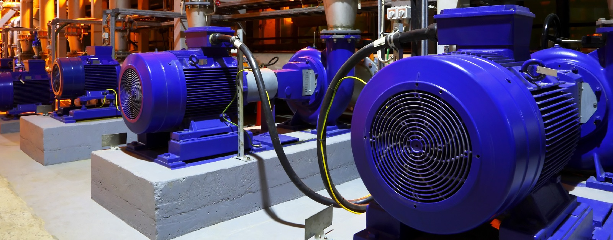

INDUSTRIAL CONTROL · DOWNPATRICK
Keep your process
moving forward.
Electric motors, variable speed drives and technical support. From specification and commissioning to ongoing care.

WHAT WE DO
Support for every stage
of the drive lifecycle.
Drive Services
Support throughout the drive lifecycle.
Installation & Commissioning
Set up for the needs of your process.
On Site Installation
Practical support at your facility.
Drive Upgrade & Replacement
A planned route beyond ageing equipment.
DriveCare & Service Agreements
Understand and protect your drive population.
Preventative Maintenance
Plan maintenance around critical equipment.
Motors · Drives · Technical support
Technical knowledge.
Practical support.
Established in 2007 and based in Downpatrick, Advantage Control supplies electric motors, variable speed drives and motor control solutions across Ireland and the UK. Its offer brings together specification, installation, commissioning, technical support and maintenance.
About the business ↗A CLOSER LOOK
Inside the application.
GOOD TO KNOW
A clearer
starting point.
How do I begin?
Call 028 4461 3782 or prepare an enquiry on the contact page. Outline your location, requirements and intended timing.
How do I get a quotation?
Please contact the business directly for a quotation. Current pricing, availability and scope need to be confirmed by the team.